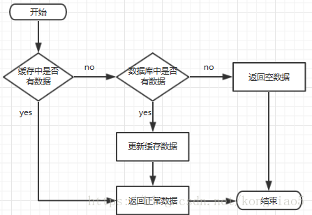

安装配置
如何在Windows的WSL2下载并配置Redis，并且通过配置端口转发，实现本地pycharm访问redis服务。一文详解。 - AlphaGeek - 博客园
启动服务器
redis-server
启动客户端 redis-cli
RedisInsight
好像直接用window版就可以 wsl的redis直接占用那个端口的
基本数据结构
字符串string
set key value
get key
redis的key区分大小写
redis默认使用string存储数据 而且是二进制安全的 ->不支持中文
del key
exists key
keys * key *me所有以me结尾的键
flushall 删除所有的键
clear 清空屏幕
TTL key 查看过期时间
expire key 设置过期时间
setex key seconds value
列表
好像是个双向栈
LPUSH key element
RPUSH key element
LRANGE key start stop like LRANGE letter 0 -1
相当于这个key是数组名，一个key对一个列表
LPOP key [count] 删除最后n个元素
RPOP key [count]
LLEN key 列表长度
集合
SADD key member [member ...] 向集合key中添加元素
SMEMBERS key查看集合元素
SISMEMBER key member 查询元素是否集合中
SREM key member 删除集合中的元素
Redis中支持集合的基本运算（交集、并集···）SINTER SUNION
有序集合
每个元素都会关联一个浮点类型的分数，来对集合中的元素进行从小到大的排序
有序集合的成员是唯一的，但是分数是可以重复的
ZADD key score member
ZRANGE key start stop [WITHSCORES]
ZSCORE key member 查询分数
ZRANK key member 查询排名
ZRREVRANK key 查询排名（从大到小）
ZREM key member 删除有序集合中的元素
哈希
一个键值对的集合
HSET key field value 键值对：field-value
HGET key field
HGETALL key 获取所有键值对
HDEL key field 删除键值对
HKEYS key
HLENS key 所有键值对的数量
发布订阅模式
SUBSCRIBE channel [channel ...]
PUBLISH channel message
问题：消息无法持久化 无法记录历史消息等等
解决：↓↓↓
消息队列Stream
XADD key *|id field value like XADD async * course redis XADD async * course git
*=自动生成id
XLEN key 查看消息数量
XRANGE key start end 查看Stream中消息的详细内容XRANGE async - +
XDEL key id [id ...] 删除
XTRIM key MAXLEN | MINID [= | ~] threshold
e.g.
XTRIM async MAXLEN 0即删除所有消息
XREAD [COUNT count] [BLOCK milliseconds] STREAMS key id
count:一次读取n条消息，block:如果没有消息的话就阻塞n毫秒，id:从这条开始向后读
XREAD COUNT 2 BLOCK 1000 STREAMS async 00:从头开始读取
XGROUP CREATE key group id | $创建一个叫group的消费组
XINFO GROUPS key 查看消费组信息
XGROUP CREATECONSUMER key group consumer添加消费者
为啥不用kafka rabbitMQ 这里默认是你要掌握消息队列 消息中间件 中 消费-生产模式的概念
XINFO GROUPS key 查看一个消费者
XREADGROUP GROUP group consumer [COUNT count] [BLOCK milliseconds] STREAMS key id
id:>读取最新的消息
地理空间Geospatial
GEOADD key longtitude latitude member GEOPOS key member
GEODIST key member member [KM]
GEOSEARCH key FROMMEMBER member BYRADIUS radius [KM]
HyperLogLog
集合中不计算重复元素的个数
PFADD key [element...] PFCOUNT key PFMERGE destkey sourcekey sourcekey
Bitmap
SETBIT key offset value GETBIT key offset
可以直接使用set设置
`SET key “\xF0”
此处\xF0 = 16 = 1111
offset 0 1 2 3 4 5 6 7 value 1 1 1 1 0 0 0 0
BITCOUNT key有多少个1
BITPOS key bit 一个出现bit（0/1）的位置
位域Bitfield
BITFIELD key <SET encoding offset value|INCRBY encoding offset increment>
BITFILD key [GET encoding offset|[OVERFLOW WRAP|SAT|FAIL]
BITFIELD player:1 set u8 #0 1
其他
INCR key
Redis事务
再一次请求中执行多个命令，Redis中的事务主要是通过MULTI(开启)和EXEC(执行)这两个命令来实现
与关系性数据库不同，Redis不能保证所有命令都能执行成功，它的执行成果取决于事务中的命令。
但是Redis能为我们保证以下三点：
- 发送EXEC命令之前，所有命令都会被放入到一个队列中缓存起来，不会立即执行
- 在收到EXEC命令之后，事务开始执行，事务中的任何一个命令执行失败，其他命令仍然会被执行
- 在事务的执行过程中，其他客户端提交的命令请求，并不会呗插入到事务的执行命令序列中
E.G.
1 | MULTI |
Redis持久化
因为Redis是基于内存(RAM)的数据库,如果没有持久化的话,一旦服务器重启或者断电所有数据都会丢失,所以需要持久化
RDB(Redis Database)
在指定时间间隔内将内存中的数据快照写入磁盘，他是某一个时间点上数据的完整副本，可以通过配置文件（redis.conf）中的SAVE参数来配置
save <seconds> <changes> [<seconds> <changes> ...]
save 秒数 修改次数
save 手动触发快照
xxd dump.rdb
由于生产环境中为redis开辟的内存区域一般都比较大，内存中数据同步到硬盘的这个过程会持续比较长的时间，这段时间Redis都处于一个阻塞的状态，不能接受任何请求
bgsave 创建一个子进程，来负责将内存中的数据写入硬盘中，但是过程中有一定的性能损耗
AOF(Append Only File)
追加文件。
在执行写命令时，不仅会将命令写入内存中，还会将命令写入到一个追加的文件中，即AOF文件，它以日志的形式来记录每一个写操作。当Redis重启的时候就会通过重新执行AOF文件中的命令，来在内存中重建整个数据库的内容。
开启AOF：在配置文件中将append only 的值改成yes即可
主从复制
将一台Redis的数据复制到其他Redis服务器。
主节点(master)————->从节点(slave)（可复数）
一般来说，主节点负责写操作，从节点负责读操作。
主节点会将自己的数据变化通过异步的方式发送给从节点，从节点接收到后更新自己的数据来达到数据一致。
配置
只需要修改从节点配置。
方式1：通过命令行执行命令(不常用)
命令配置方式：
查看当前节点角色：role配置所属主节点： replicaof host port 或者 slaveof host port
方式2：通过配置文件
进入Redis的安装目录下，把配置文件复制到根目录下 cp redis.conf ~，作为主节点的配置文件（不需要改动）
回到根目录 cp redis.conf redis-6380.conf复制为6380（←这是端口号）作为从节点的配置文件
修改此文件：把端口号改为6380，把pidfile改为6380
（Redis是以守护进程的方式运行，系统默认会把pid写入这个文件）
找到dbfilename，把后面的文件名也加上端口号（此即为持久化文件，当执行save/bgsave时储存）
找到replicaof，写入主节点ip&端口号（指定主节点）
再次复制:1,$s/6380/6381/g <-这是什么o.0
info replicatioon查看主节点信息
哨兵模式Sentinel
哨兵会以一个独立的进程运行在redis集群中，用来监控redis集群中的各个节点是否运行正常
主要作用:监控、通知、自动故障转移（把一个从节点设置为主节点
配置文件sentinel.conf，添加配置sentinel monitor master 127.0.0.1 6379 1
启动哨兵节点：redis-sentinel sentinel.conf
过期策略和淘汰策略
当key过期了/内存达到最大可使用空间时，需要去删除数据。
被动删除策略
触发条件：读/写一个过期的key时，发现过期就删除。
缺点：冷数据无法删除（一直没读写）
主动删除策略
触发条件：
已用内存超过maxmemory时触发
清理策略：
1. volatile(已设置过期时间key的集合)-lru(最近最少使用数据) 1. volatile-ttl(将要过期) 1. volatile-random(随机) 1. allkeys(所有key集合)-lru 1. allkeys-random设置key的过期时间(EXPIRE key second)
默认策略Enviction
内存达到限制时，不淘汰数据，也不写入，命令报错。
常见场景问题
缓存系统：

缓存穿透、击穿、雪崩
缓存穿透
场景
缓存和数据库中都没有的数据，而用户不断发起请求（恶意攻击）。由于缓存是不命中时被动写的，并且出于容错考虑，如果从存储层查不到数据则不写入缓存，这将导致这个不存在的数据每次请求都要到存储层去查询，失去了缓存的意义。
解决方案
- 接口层增加校验，如用户鉴权校验，id做基础校验，id<=0的直接拦截；
- 从缓存取不到的数据，在数据库中也没有取到，这时也可以将key-value对写为key-null，缓存有效时间可以设置短点，如30秒（设置太长会导致正常情况也没法使用）。这样可以防止攻击用户反复用同一个id暴力攻击
缓存击穿
redis的一个key可以接受3000个l请求，而mysql可以接受2000个。当redis的有一个key的TTL=0时，3000个请求瞬间来到mysql，此事可能出现瞬间宕机，导致整个系统都没办法进行使用
场景
缓存击穿是指缓存中没有但数据库中有的数据（一般是缓存时间到期），这时由于并发用户特别多，同时读缓存没读到数据，又同时去数据库去取数据，引起数据库压力瞬间增大，造成过大压力。
解决方案
- 设置热点数据永远不过期。
- 接口限流与熔断，降级。重要的接口一定要做好限流策略，防止用户恶意刷接口，同时要降级准备，当接口中的某些服务不可用时候，进行熔断，失败快速返回机制。
- 布隆过滤器。bloomfilter就类似于一个hash set，用于快速判某个元素是否存在于集合中，其典型的应用场景就是快速判断一个key是否存在于某容器，不存在就直接返回。布隆过滤器的关键就在于hash算法和容器大小，
- 加互斥锁。
参考代码：1
2
3
4
5
6
7
8
9
10
11
12
13
14
15
16
17
18
19
20
21
22
23
24public static String getData(String key) throws InterruptedException{
//从缓存中读取数据
String result = getDataFromRedis(key);
if(result == null){
//去获取锁，获取成功去数据库获取数据
if(reenLock,tryLock()){
result = getDataFromMysql(key);
if(result!=null){
setDataToCache(key,result);
}
//释放锁
reenLock.unlock();
}
//获取失败
else{
//暂停100ms再重新去获取数据
Thread.sleep(100);
result = getData(key);
}
return result;
}
}
//如果缓存中没有数据，第1个进入的线程，获取锁并从数据库去取数据，没释放锁之前，其他并行进入的线程会等待100ms，再重新去缓存取数据。这样就防止都去数据库重复取数据，重复往缓存中更新数据情况出现。
缓存雪崩
场景
缓存雪崩是指缓存中数据大批量到过期时间，而查询数据量巨大，引起数据库压力过大甚至down机。和缓存击穿不同的是，缓存击穿指并发查同一条数据，缓存雪崩是不同数据都过期了，很多数据都查不到从而查数据库。
解决办法
- 缓存数据的过期时间设置随机，防止同一时间大量数据过期现象发生。
- 如果缓存数据库是分布式部署，将热点数据均匀分布在不同搞得缓存数据库中。
- 设置热点数据永远不过期。
缓存的预热和降级
缓存预热
场景
系统上线后，将相关的缓存数据直接加载到缓存系统。这样就可以避免在用户请求的时候，先查询数据库，然后再将数据缓存的问题,用户直接查询事先被预热的缓存数据。
实现
- 直接写个缓存刷新页面，上线时手工操作下；
- 数据量不大，可以在项目启动的时候自动进行加载；
- 定时刷新缓存；
缓存降级
当访问量剧增、服务出现问题（如响应时间慢或不响应）或非核心服务影响到核心流程的性能时，仍然需要保证服务还是可用的，即使是有损服务。系统可以根据一些关键数据进行自动降级，也可以配置开关实现人工降级。
降级的目的是保证核心服务可用，即使可能有损其他操作。比如双十一的时候淘宝购物车无法修改地址只能使用默认地址，这个服务就是被降级了，这是阿里为了保证订单可以正常提交和付款，但修改地址的服务可以在服务器压力降低，并发量相对减少的时候再恢复。
缓存更新策略
除了缓存服务器自带的缓存失效策略之外，根据具体的业务需求进行自定义的缓存淘汰
常见的策略有两种：
定时去清理过期的缓存；
当有用户请求过来时，再判断这个请求所用到的缓存是否过期，过期的话就去底层系统得到新数据并更新缓存。
两者各有优劣，第一种的缺点是维护大量缓存的key是比较麻烦的，第二种的缺点就是每次用户请求过来都要判断缓存失效，逻辑相对比较复杂，具体用哪种方案，可以根据自己的应用场景来权衡。
大key和热key
热key
热key是服务端的常见问题，指一段时间内某个key的访问量远远超过其他的key，导致大量访问流量落在某一个redis实例中；或者是带宽使用率集中在特定的key（例如，对一个包含2000个field的hash key每秒发送大量的hgetall操作请求）；又或者是cpu使用时间占比集中在特定的key（例如，对一个包含10000个field的key每秒发送大量的zrange操作请求）。
可能造成的问题
- 热点缓存会导致流量集中，redis缓存与数据库被击穿，从而引发系统雪崩。
- 请求分配不均，存在热key的节点面临较大的访问压力，可能出现该数据分片的连接数被耗尽甚至宕机。（即使采取扩容也会对资源有很大的浪费）
常用的处理方法
- 热key统计可以使用LFU数据结构并结合上面的发现方法，将最热topN的key进行统计，然后在client端使用本地缓存，从而降低redis集群对热key的访问量，但这种方法带来两个问题：
- 如果对所有热key进行本地缓存，那么本地缓存是否会过大，从而影响应用程序本身的性能开销。
- 可能需要保证本地缓存和redis数据的一致性。
- 将热key加上前缀或者后缀，把热key的数量从1个变成实例个数，利用分片特性将这n个key分散在不同节点上，这样就可以在访问的时候，采用客户端负载均衡的方式，随机选择一个key进行访问，将访问压力分散到不同的实例中。这个方案有个明显的缺点，就是缓存的维护成本大：假如有n为100，则更新或者删除key的时候需要操作100个key。
- 利用读写分离，通过主从复制的方式，增加slave节点来实现读请求的负载均衡。这个方案明显的缺点就是使用机器硬抗热key的数据，资源耗费严重；而且引入读写分离架构，增加节点数量，都会增加系统的复杂度降低稳定性。
大key
大key是指当redis的字符串类型占用内存过大或非字符串类型元素数量过多。
生产环境中，综合衡量运维和环境的情况，给大key定义参考值如下：
- string类型的key超过10KB
- hash/set/zset/list等数据结构中元素个数大于5k/整体占用内存大于10MB
可能造成的问题
- 内存使用不均匀。
- 响应时间上升、超时阻塞。由于redis是单线程架构，操作大key耗时较长，有可能造成redis阻塞。
- 过期时可能阻塞。大key设定了过期时间，当过期时这个key会被删除。假如redis版本低于4.0没有非同步删除机制，就会存在阻塞redis的可能性，并且慢查询查不到；同样，内存不足时的key驱逐或者是rename一个大key也会阻塞redis服务。长时间阻塞主库，可能会引发同步中断或主从切换。
慢查询为什么查不到。举例，如果请求进来且redis服务器正在进行过期键扫描，需要等待100毫秒。当客户端设置的超时时间小于100毫秒，那就会导致连接因为超时而关闭，就会造成异常，这些现象并不能从慢查询日志中查询到（因为慢查询只记录逻辑处理过程，不包括等待时间）。
- 网络拥塞。
常用的处理方法
- 大key非热key，如果不是必要的信息，可以直接删除del或者unlink都可以。
- 数据结构上拆分。如果大key是个大json，可以通过mset的方式，将这个key的内容打散到各个实例中，减小大key对数据量倾斜的影响；如果是大list，可以拆成
list_1,list_2,list_N；其他数据结构同理。（可以考虑增加单独key存储大key被拆分的个数或元数据信息） - 在redis没有开启非同步删除机制的场景下，设置过期时间时，一定要避免大批量键同时过期的现象。
- 对于长文本，更建议使用文档型数据库例如MongoDB等。
- 对一致性要求不高的场景，尝试使用客户端缓存。（只解决了redis的阻塞问题，但机器或局域网的带宽问题没有改善）
- 对大key的压缩。相当于用cpu资源来降低网络io，其中google提出的snappy算法较常用。
- 对于hash等数据结构，需要注意业务是否可以引入定期清理无效field的机制。
基于Redis实现分布式锁
Redis分布式锁-这一篇全了解(Redisson实现分布式锁完美方案)_redisson分布式锁实现-CSDN博客
用大白话的方式，带你彻底搞懂Redis分布式锁！_哔哩哔哩_bilibili
当使用分布式集群部署时，同步锁会出问题，这个时候要用分布式锁。
分布式锁需满足四个条件
首先，为了确保分布式锁可用，我们至少要确保锁的实现同时满足以下四个条件：
- 互斥性。在任意时刻，只有一个客户端能持有锁。
- 不会发生死锁。即使有一个客户端在持有锁的期间崩溃而没有主动解锁，也能保证后续其他客户端能加锁。
- 解铃还须系铃人。加锁和解锁必须是同一个客户端，客户端自己不能把别人加的锁给解了，即不能误解锁。
- 具有容错性。只要大多数Redis节点正常运行，客户端就能够获取和释放锁
通过setNX实现分布式锁
设置过期时间防止死锁（锁泄露？
问题：
- 当锁过期时线程还在处理业务中
- 当处理完释放其他线程的锁
解决：
- 加长时间，并添加子线程每10秒确认线程是否在线，在线则将过期时间重设。（看门狗
- 给锁加唯一ID(UUID)
Redisson
RLock lock = redisson.getLock(LOCK_KEY);
lock.lock();
如果主从节点中主节点挂了？（假设主节点加到了锁，从节点还没有同步到）
red lock 针对所有节点同步，保证强一致性。